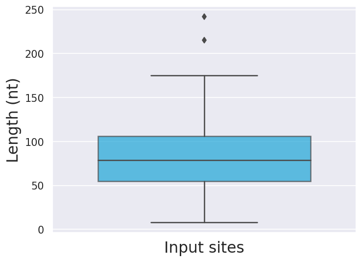
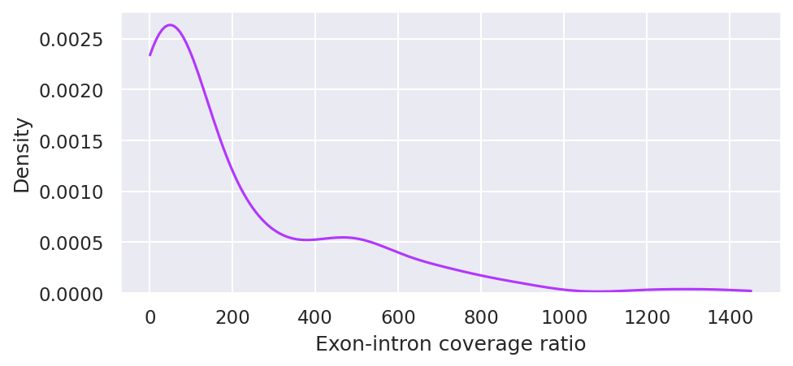
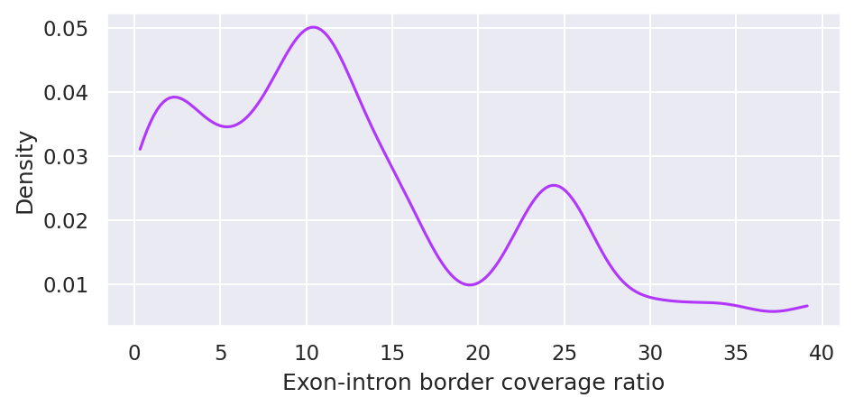

List of available context extraction statistics generated by Peakhood (peakhood extract):
Table: Input site length statistics (min, max, mean, and median length) in nucleotides (nt).
| Attribute | Value |
|---|---|
| # sites | 125 |
| min site length | 8 |
| max site length | 242 |
| mean site length | 83.2 |
| median site length | 79 |
Input site length distribution, after pre-merging of book-ended and overlapping input sites (if set) and pre-filtering (if set, e.g. by score or length). Note that set --pre-merge leads to increased lengths if there are adjacent or overlapping sites. Moreover, set --max-len (default 200) limits the maximum site length, but this can increase again if --pre-merge is set (since --pre-merge is applied after --max-len filtering).

Figure: Input site length distribution (after pre-filtering and-pre-merging sites).
Table: Assigned site region type statistics. Exonic sites can be either assigned to transcript context (TC) or genomic context (GC), depending on the read information in the input BAM file. In addition, transcript context site count with merged exon border sites is given (MEXB). Intronic sites are sites with insufficient (see --min-exon-overlap, default >= 90 percent) or no overlap with any exonic region from the input GTF file. Intergenic sites do not overlap with any transcript regions from the input GTF file. Depending on which pipeline was used to determine the input CLIP-seq peak regions, there might be little or no intergenic sites due to pre-filtering for gene regions.
| Region type | Count |
|---|---|
| exonic (GC) | 7 |
| exonic (TC) | 96 |
| exonic (TC) MEXB | 92 |
| intronic | 22 |
| intergenic | 0 |
Table: Exon-intron coverage ratios statistics for unique exon regions (# unique exons: 175) containing CLIP-seq sites. A unique exon region can include several annotated exon regions, since GTF files usually contain exons with different IDs but identical regions. The unique exon region ratio is the average ratio of all exon regions with the same coordinates as the unique exon region. The ratio of an exon region is calculated by dividing the exon coverage (reads / region length) through the coverage of the neighboring intron(s). In case of two introns, the average coverage of the two introns is used as the divisor. In case of no introns, a fixed value above the threshold is assigned.
| Attribute | Value |
|---|---|
| # unique exons | 175 |
| min ratio | 0.4913 |
| max ratio | 3198.6316 |
| mean ratio | 319.6294 |
| stdev ratio | 598.7539 |
| median ratio | 97.8121 |
| 25th percentile ratio | 27.0252 |
| 50th percentile ratio | 97.8121 |
| 75th percentile ratio | 384.6806 |
This plot shows the distribution of exon-intron coverage ratios for unique exon regions containing CLIP-seq sites.

Figure: Distribution of exon-intron ratios (exon coverage divided by surrounding intron coverage) for unique exon regions containing CLIP-seq sites. To prevent suboptimal scaling due to outliers, ratios are plotted only up to the 95th percentile ratio.
Table: Exon-intron border coverage ratio statistics for unique exon regions containing CLIP-seq sites. A unique exon region can include several annotated exon regions, since GTF files usually contain exons with different IDs but identical regions. Note that not all unique exon regions might be considered, since exon-intron borders with small read coverages are not considered. The ratio is calculated for each exon-intron border, taking a small border region on the intron as well as on the exon, and calculating the coverage ratio between the two. This is done for both exon ends, and the average or the ratio with more reads is returned for each exon region. These ratios are then merged to one ratio for each unique exon region.
| Attribute | Value |
|---|---|
| # considered exons | 123 |
| min ratio | 0.3235 |
| max ratio | 102.7500 |
| mean ratio | 14.7683 |
| stdev ratio | 14.0968 |
| median ratio | 11.0000 |
| 25th percentile ratio | 5.7841 |
| 50th percentile ratio | 11.0000 |
| 75th percentile ratio | 23.0833 |
This plot shows the distribution of exon-intron border coverage ratios for unique exon regions containing CLIP-seq sites.

Figure: Distribution of exon-intron border ratios (exon border coverages divided by adjacent intron border coverages) for unique exon regions containing CLIP-seq sites. To prevent suboptimal scaling due to outliers, ratios are plotted only up to the 95th percentile ratio.
Table: Repeat region content statistics for different region types. The percentage of repeat regions found in each region type set is given.
| Region type | Count | Percentage |
|---|---|---|
| exonic (GC) | 7 | 11.376 |
| exonic (TC) | 92 | 13.887 |
| intronic | 22 | 95.091 |
| intergenic | 0 | 0.000 |